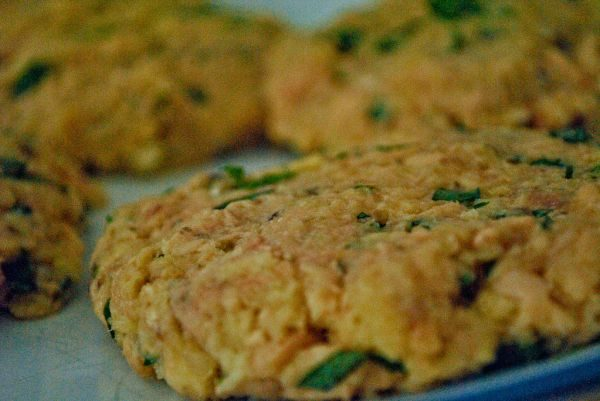

Salmon Patties
Makes 6 servings

Photo: cookbookman17 (CC BY 2.0)
Pan-fried patties made from canned pink salmon bound with saltine cracker crumbs, cornmeal, and egg, and seasoned with salt and pepper.
Directions
- Drain salmon, reserving liquid; set liquid aside. Remove skin and bones from salmon if desired; flake with a fork, and set aside.
- Combine cracker crumbs and reserve liquid; let stand 5 minutes or until liquid is absorbed. Stir in salmon, cornmeal, and next 3 ingredients. Shape salmon mixture into 6 patties. Pour oil to depth of 1/4 inch into a large heavy skillet. Fry patties in hot oil over medium heat until browned, turning one,. Drain patties on paper towels.
- Drain the salmon, reserving the liquid; set the liquid aside. If desired, remove the skin and bones from the salmon, then flake it with a fork and set aside.
- Combine the cracker crumbs with the reserved salmon liquid and let stand 5 minutes, or until the liquid is absorbed.
- Stir in the salmon, cornmeal, egg, salt, and pepper.
- Shape the salmon mixture into 6 patties.
- Pour vegetable oil to a depth of 1/4 inch into a large heavy skillet.
- Fry the patties in the hot oil over medium heat until browned, turning once.
- Drain the patties on paper towels.
https://baron-3dl.github.io/normans-kitchen/recipe/salmon-patties.html